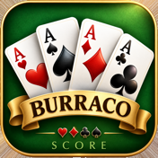

Informativa sulla privacy
Burraco Score, Burraco Score Classic, Burraco Score HD e Burraco Score HD Light — ultimo aggiornamento 23 settembre 2026
1. Chi siamo
Burraco Score (per iPhone e iPad) è un'app di Fabrizio Bacchin (Svizzera) che tiene il punteggio del gioco di carte Burraco. Questa informativa vale anche per le versioni precedenti, non più in vendita e non più aggiornate: Burraco Score Classic (per iPhone), Burraco Score HD e Burraco Score HD Light (per iPad).
| App | Pubblicità |
|---|---|
| Burraco Score (iPhone e iPad, gratuita) | Banner e interstiziali di Google AdMob, che si possono togliere con un acquisto — vedi i punti 4 e 6. |
| Burraco Score Classic (iPhone, a pagamento, non più in vendita) | Nessuna. L'app non contiene codice pubblicitario. |
| Burraco Score HD (iPad, a pagamento, non più in vendita) | Nessuna. L'app non contiene codice pubblicitario. |
| Burraco Score HD Light (iPad, gratuita, non più in vendita) | Banner e interstiziali di Google AdMob — vedi il punto 4. |
2. I dati restano sul tuo dispositivo
I nomi, le mani e i punteggi della partita in corso restano sul tuo dispositivo mentre giochi; chiudendo l'app o iniziando una nuova partita i valori correnti vengono azzerati.
Le partite concluse vengono invece salvate in uno storico, insieme alla classifica dei giocatori e ai nomi che riusi. Questi dati restano memorizzati sul dispositivo finché non li cancelli tu, dalla schermata della classifica con "Cancella storico e nomi". In ogni caso nulla viene caricato da nessuna parte: non esiste alcun account e non c'è sincronizzazione sul cloud.
3. Notifiche push
Se — e solo se — autorizzi le notifiche, l'app registra il tuo dispositivo presso il nostro servizio di notifica (Back4App, un fornitore di hosting Parse). La registrazione contiene:
- il token di notifica anonimo del tuo dispositivo (APNs)
- un identificativo di installazione casuale generato dall'app
- il tipo di dispositivo ("ios"), la versione dell'app, il fuso orario e la lingua impostata
Nessuno di questi dati ti identifica personalmente, non è collegato ad alcun account ed è usato esclusivamente per inviare occasionali notifiche sull'app. Non viene mai venduto né condiviso a fini pubblicitari. Se rifiuti o disattivi in seguito le notifiche, non viene usata alcuna registrazione. Puoi chiedere in qualsiasi momento la cancellazione della tua registrazione scrivendoci.
4. Pubblicità — solo Burraco Score e Burraco Score HD Light
Le versioni gratuite sono sostenute dalla pubblicità servita da Google AdMob. Per selezionare e misurare gli annunci, Google può trattare dati come gli identificativi del dispositivo e della pubblicità, il tuo indirizzo IP (che indica una posizione approssimativa) e informazioni su come interagisci con gli annunci.
Il tuo consenso (SEE, Regno Unito e Svizzera). Prima che l'app richieda un annuncio, ti viene mostrato il messaggio di consenso di Google. Se acconsenti, gli annunci possono essere personalizzati. Se rifiuti, l'app continua a mostrare annunci, ma limitati (non personalizzati). Puoi cambiare idea quando vuoi: apri il pulsante ⓘ nell'app e tocca "Impostazioni privacy".
L'app non ti chiede l'autorizzazione a tracciarti nelle app e nei siti di altre aziende (App Tracking Transparency di Apple) e quindi non usa a questo scopo l'identificativo pubblicitario.
Il modo in cui Google utilizza questi dati è descritto in Come Google utilizza le informazioni provenienti da siti o app che utilizzano i nostri servizi e nelle Norme sulla privacy di Google.
Se hai acquistato la rimozione della pubblicità (punto 6), Burraco Score non mostra più annunci, non contatta Google AdMob e non ti chiede il consenso pubblicitario.
Quando non è possibile mostrare alcun annuncio (per esempio senza connessione a internet), l'app mostra la promozione di altre app dello stesso sviluppatore. Quella promozione è integrata nell'app, non raccoglie nulla e non contatta alcun server.
5. Statistiche d'uso anonime — solo Burraco Score
Per capire quali funzioni si usano davvero, Burraco Score (dalla versione 5.0) manda alcune statistiche d'uso anonime a PostHog, su server nell'Unione europea. Sono sempre e solo questi segnali:
- quale schermata apri: partita, classifica, come si gioca, giocatori salvati, tabellone, rimozione della pubblicità
- l'inizio e la fine di una partita, con il traguardo scelto (2000, 3000, 4000 o 5000) e se si gioca uno contro uno o in coppia
- la correzione di una mano già inserita
- un eventuale problema dell'acquisto in-app, ridotto a una causa generica (per esempio «prodotti non raggiungibili»)
A ogni segnale si aggiungono se usi un iPhone o un iPad, un identificativo casuale generato dall'app e i dati tecnici che accompagnano qualsiasi richiesta su internet (modello del dispositivo, versioni di iOS e dell'app, lingua, indirizzo IP). Non escono mai i nomi dei giocatori, i punteggi o altri contenuti delle partite. Non si crea alcun profilo, lo schermo non viene registrato e questi dati non servono a tracciarti nelle app o nei siti di altre aziende.
6. Acquisti per togliere la pubblicità — solo Burraco Score
In Burraco Score puoi togliere la pubblicità con un abbonamento annuale oppure con un acquisto una tantum. Il pagamento lo gestisce Apple: noi non vediamo mai i tuoi dati di pagamento. Per verificare l'acquisto l'app usa RevenueCat, che riceve da Apple la ricevuta dell'acquisto insieme a un identificativo casuale generato dall'app: nessun nome, nessuna email, nessun account. L'abbonamento si gestisce e si disdice dalle impostazioni del tuo account App Store; gli acquisti si ripristinano dall'app, nella schermata «Rimuovi la pubblicità».
7. Cosa non facciamo
- Nessun account, nessun profilo
- Nessuna statistica che ti identifichi: quelle del punto 5 sono anonime e non creano profili
- Nessuna posizione: l'app non la richiede mai
- Nessuna pubblicità, di nessun genere, in Burraco Score Classic, in Burraco Score HD e in Burraco Score dopo l'acquisto della rimozione
- Nessuna vendita dei tuoi dati
- Nessun dato raccolto consapevolmente da minori — sono segnapunti classificati 4+
8. I tuoi diritti
In base alla legge svizzera sulla protezione dei dati (nLPD) e al GDPR puoi chiedere l'accesso, la rettifica o la cancellazione dei dati descritti al punto 3. Poiché non conserviamo alcuna informazione identificativa, indica per favore la data approssimativa in cui hai attivato le notifiche, così possiamo ritrovare la registrazione. Per i dati pubblicitari del punto 4, Google agisce come titolare autonomo: puoi esercitare i tuoi diritti anche direttamente presso Google tramite i link qui sopra. Le statistiche del punto 5 e i dati d'acquisto del punto 6 non contengono nulla che ti identifichi: per questo non possiamo ricondurli a te. Scrivi a bacchin@tiscali.it.
9. Modifiche
Se le app dovessero acquisire nuove funzioni (per esempio una richiesta di tracciamento nelle altre app, o la registrazione dello schermo), questa informativa verrà aggiornata prima che tali funzioni vengano rilasciate, e la data di "ultimo aggiornamento" qui sopra cambierà.